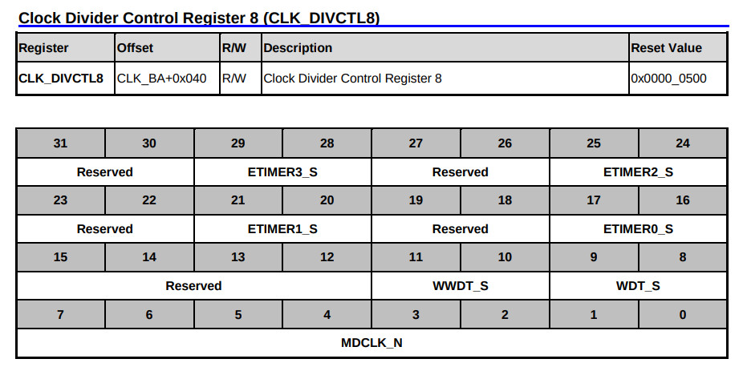
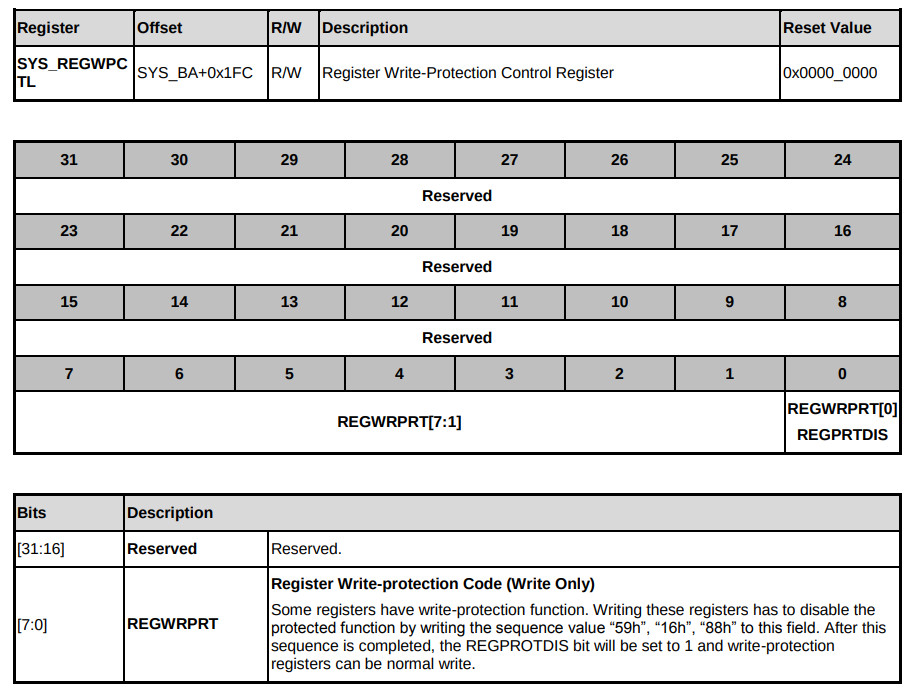
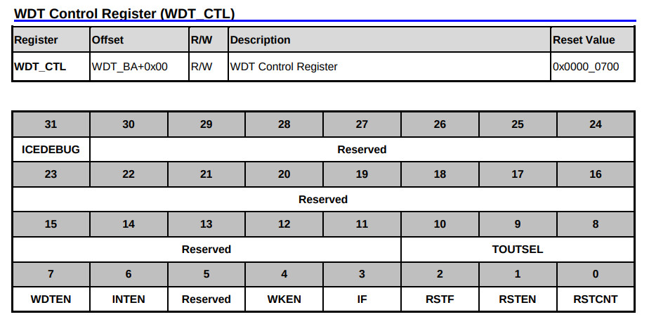
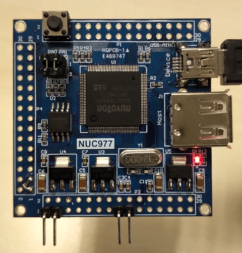
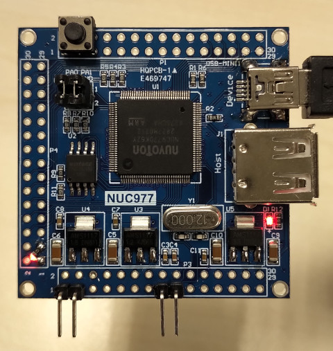

Steward
分享是一種喜悅、更是一種幸福
微處理器 - Nuvoton NUC977 - Assembly - Watchdog Timer(WDT)
參考資訊：
https://github.com/OpenNuvoton/NUC970_NonOS_BSP
https://blog.csdn.net/code_style/article/details/72616904
https://blog.csdn.net/shw03201/article/details/103821680?utm_medium=distribute.pc_relevant.none-task-blog-BlogCommendFromMachineLearnPai2-2.control&depth_1-utm_source=distribute.pc_relevant.none-task-blog-BlogCommendFromMachineLearnPai2-2.control
WDT_S

解鎖順序：0x59、0x16、0x88

WDTEN、RSTEN不是Read Only

main.s
.equ GPIOD_DIR, (0xb8003000 + 0xc0)
.equ GPIOD_DATAOUT, (0xb8003000 + 0xc4)
.equ CLK_PCLKEN0, (0xb0000200 + 0x18)
.equ WDT_CTL, (0xb8001800 + 0x00)
.equ WDT_ALTCTL, (0xb8001800 + 0x04)
.equ SYS_REGWPCTL, (0xb0000000 + 0x1fc)
.equ CLK_DIVCTL8, (0xb0000200 + 0x40)
.text
.align 2
.global _start
_start: b reset
_undef: b .
_swi: b .
_pabort: b .
_dabort: b .
_reserved: b .
_irq: b .
_fiq: b .
reset:
ldr r0, =CLK_PCLKEN0
ldr r1, [r0]
orr r1, #((1 << 3 ) | ( 1 << 0))
str r1, [r0]
ldr r0, =CLK_DIVCTL8
ldr r1, [r0]
and r1, #0xffffffcf
orr r1, #0x00000020
str r1, [r0]
ldr r0, =SYS_REGWPCTL
ldr r1, =0x59
ldr r2, =0x16
ldr r3, =0x88
str r1, [r0]
str r2, [r0]
str r3, [r0]
ldr r0, =WDT_CTL
ldr r1, =0x78f
str r1, [r0]
ldr r0, =GPIOD_DIR
ldr r1, =(1 << 6)
str r1, [r0]
loop:
ldr r0, =GPIOD_DATAOUT
ldr r1, =(1 << 6)
str r1, [r0]
ldr r4, =100000
1:
nop
subs r4, r4, #1
bne 1b
ldr r0, =GPIOD_DATAOUT
ldr r1, =~(1 << 6)
str r1, [r0]
ldr r4, =100000
1:
nop
subs r4, r4, #1
bne 1b
b loop
.end
P.S. 除了詭異的SYS_PWRON，還需要注意PA.3(1 = WDT is ON after power-on)腳位的設定，司徒目前PA.3是懸空，建議接到VCC，正確使用WDT
Watchdog Reset後，SDRAM資料消失，LED不再閃爍

